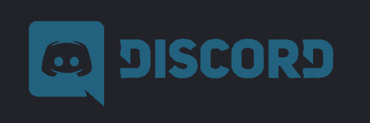
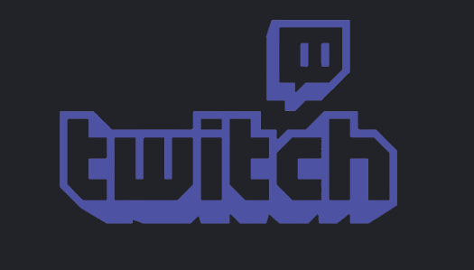
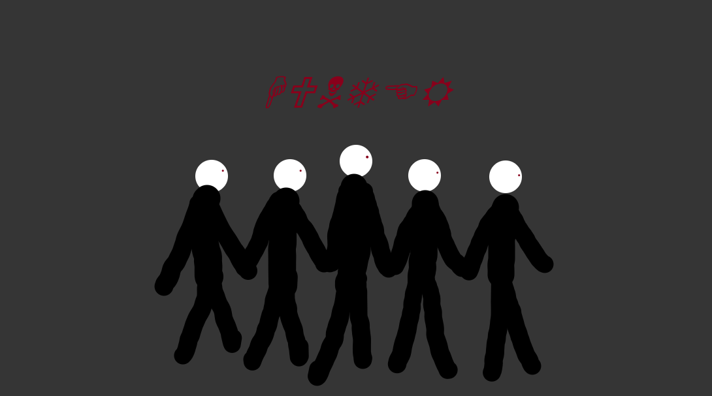

Le serveur "The Big Ones" a été créé par Budky et Cactus Man. C'est un serveur fait pour une petite communautée constituée d'envirion 15 membres. Cette communautée est constituée de personnes très spécial car elle sont les professionnels de la street.
Sur ce site web tu vas découvrir l'histoire des plus anciens membres du serveur et celle du serveur lui même. Vous n'allez pas regretter d'avoir lu et vous allez vouloir rejoindre notre communautée tout de suite après avoir lu les précieuses informations du site. Bon aller! je vous laisse avec les différentes infos à savoir sur le serveur.
 The Big Ones n'a pas du tout été le premier serveur créé par la communautée des professionnels. Plusieurs autres serveurs ont précédés The Big Ones. Cette longue aventure n'était pas qu'une petite marche sur le long d'un ruisseau mais plutôt une longue marche le long de l'univers.
Donc tout a commencé avec "Sexy Meute De Lion", Sexy Meute De Lion était le tout premier serveur de la communautée de la street. Le créateur était Cactus Man(le pro des pros). Budky n'était pas encore très présent sur discord. Le serveur était très bien mais pas du tout assez pour les aussi grand professionnels que nous sommes.
Environ quatres mois après avoir créé le serveur Sexy Meute De Lion Budky venait de rejoindre discord. Un mois après qu'il est rejoint discord c'était la merde, il avait créé un autre serveur pour kidnapper la communautée des pros. Le petit malin voulait tout détruire se que Cactus Man avait construit, mais Cactus Man n'allait pas se laisser faire.

Sa faisait maintenant deux mois que la communautée était sur le serveur de Budky. Cactus Man était malheureux mais c'est là qu'il a réfléchie et prit des mois et des mois à reconstruire Sexy Meute De Lion. exactement six mois après avoir perdu son serveur Cactus Man invita tout le monde sur son serveur et Cactus Man était revenu dans le game. Le misérable Budky était à nouveaux un LOSER.
La vie allait très bien, la guerre était fini, mais se sacré Budky ne pouvait jamais s'arrêter. Il avait créé un autre serveur qui était, je dois l'admettre mieux que le nouveaux Sexy Meute De Lion. Mais cela n'a aucune importance car a ce moment précis Cactus Man avait déja élaboré un plan DIABOLIQUE!
Cactus Man est le créateur du serveur Sexy Meute De Lion, il a acompli plusieurs choses sur discord et a vécu la guerre. Cactus Man est maintenant plus totalement propriétaire d'un serveur mais comme dit dans l'histoire du serveur il a déja élaboré un plan DIABOLIQUE.

Budky est le créateur du serveur Budky Server, il a volé la communautée de cactus et les a mal traîté pendant des mois. Budky est celui qui a déclenché la guerre entre Cactus Man et lui même. Il n'a aucune idées de se qui lui attend et n'en aura aucune idées avant que le plan DIABOLIQUE arrive.

Finalement, pour finir en beauté je vais vous annoncer les futurs projets que Cactus Man a en tête pour le serveur. Cactus a comme projet de créer l'équipe spéciale "la secte hunter". Cette secte sera la raison pour laquelle le serveur va être présent dans le futur.
